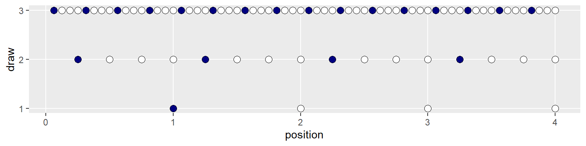
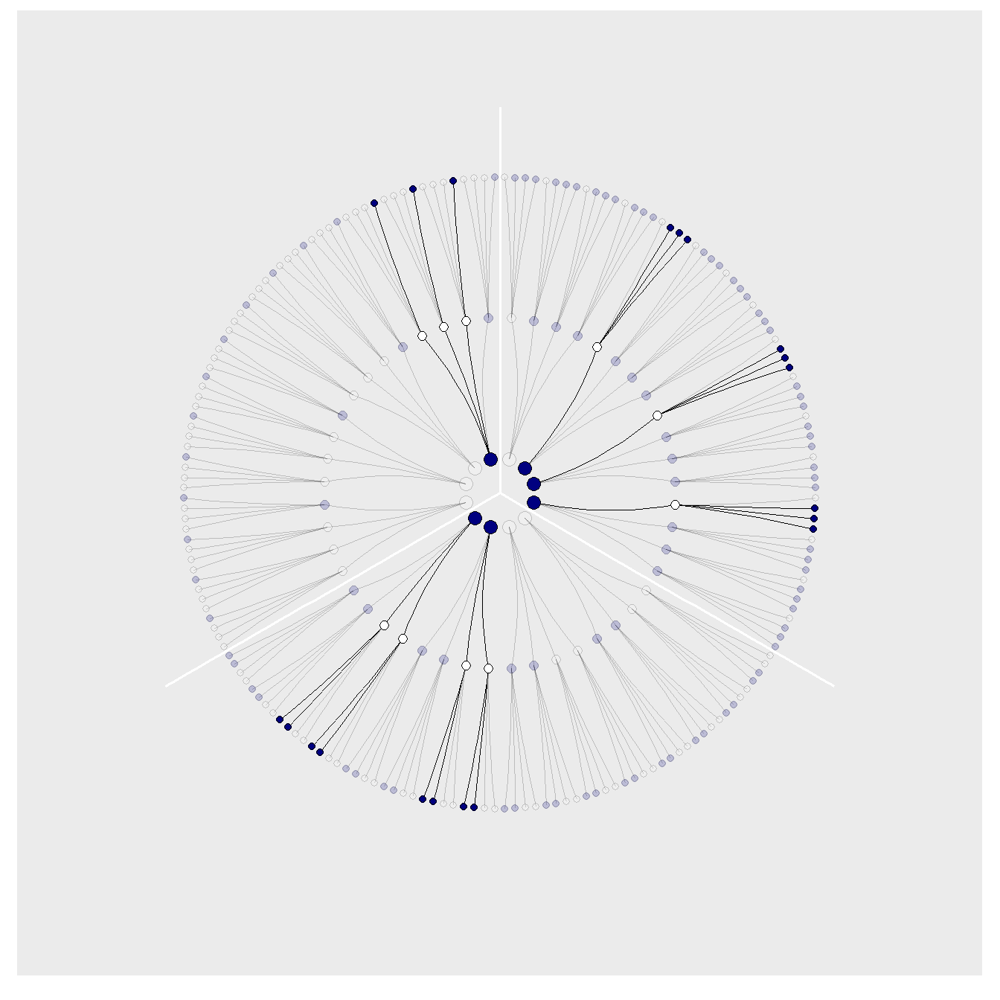

Chapter 5 Tibbling our way to success
5.1 Counting possibilities.
Instead of the base R wrangling we began to use in the previous chapter, we’ll make extensive use of the many packages from the tidyverse for data wrangling and plotting.
If you are new to tidyverse-style syntax, possibly the oddest component is the pipe (i.e., %>%). I’m not going to explain the %>% in this project, but you might learn more about in this brief clip, starting around minute 21:25 in this talk by Wickham, or in Section 5.6.1 from Grolemund and Wickham’s (???) R for data science. Really, all of Chapter 5 of R4DS is just great for new R and new tidyverse users. And R4DS Chapter 3 is a nice introduction to plotting with ggplot2 (Wickham et al. 2020; ???).
Other than the pipe, the other big thing to be aware of is tibbles (Müller and Wickham 2020). For our purposes, think of a tibble as a data object with two dimensions defined by rows and columns. Importantly, tibbles are just special types of data frames. So, whenever we talk about data frames, we’re usually talking about tibbles. For more on the topic, check out R4SD, Chapter 10.
If we’re willing to code the marbles as 0 = “white” 1 = “blue”, we can arrange the possibility data in a tibble as follows.
d <- tibble(p1 = 0, p2 = rep(1:0, times = c(1,
3)), p3 = rep(1:0, times = c(2, 2)),
p4 = rep(1:0, times = c(3, 1)), p5 = 1)
head(d)## # A tibble: 4 x 5
## p1 p2 p3 p4 p5
## <dbl> <int> <int> <int> <dbl>
## 1 0 1 1 1 1
## 2 0 0 1 1 1
## 3 0 0 0 1 1
## 4 0 0 0 0 1You might depict the possibility data in a plot.
d %>% set_names(1:5) %>% mutate(x = 1:4) %>%
pivot_longer(-x, names_to = "possibility") %>%
mutate(value = value %>% as.character()) %>%
ggplot(aes(x = x, y = possibility, fill = value)) +
geom_point(shape = 21, size = 5) +
scale_fill_manual(values = c("white",
"navy")) + scale_x_discrete(NULL,
breaks = NULL) + theme(legend.position = "none")
As a quick aside, check out Suzan Baert’s blog post Data wrangling part 2: Transforming your columns into the right shape for an extensive discussion on dplyr::mutate() and tidyr::gather(). The tidyr::pivot_longer() function is an updated variant of gather(), which we’ll be making extensive use of throughout this project. If you’re new to reshaping data with pivoting, check out the vignettes here and here (???; ???).
Here’s the basic structure of the possibilities per marble draw.
| draw | marbles | possibilities |
|---|---|---|
| 1 | 4 | 4 |
| 2 | 4 | 16 |
| 3 | 4 | 64 |
If you walk that out a little, you can structure the data required to approach Figure 2.2.
(d <- tibble(position = c((1:4^1)/4^0,
(1:4^2)/4^1, (1:4^3)/4^2), draw = rep(1:3,
times = c(4^1, 4^2, 4^3)), fill = rep(c("b",
"w"), times = c(1, 3)) %>% rep(.,
times = c(4^0 + 4^1 + 4^2))))## # A tibble: 84 x 3
## position draw fill
## <dbl> <int> <chr>
## 1 1 1 b
## 2 2 1 w
## 3 3 1 w
## 4 4 1 w
## 5 0.25 2 b
## 6 0.5 2 w
## 7 0.75 2 w
## 8 1 2 w
## 9 1.25 2 b
## 10 1.5 2 w
## # ... with 74 more rowsSee what I did there with the parentheses? If you assign a value to an object in R (e.g., dog <- 1) and just hit return, nothing will immediately pop up in the console. You have to actually execute dog before R will return 1. But if you wrap the code within parentheses (e.g., (dog <- 1)), R will perform the assignment and return the value as if you had executed dog.
But we digress. Here’s the initial plot.
d %>% ggplot(aes(x = position, y = draw,
fill = fill)) + geom_point(shape = 21,
size = 3) + scale_fill_manual(values = c("navy",
"white")) + scale_y_continuous(breaks = 1:3) +
theme(legend.position = "none", panel.grid.minor = element_blank())
To my mind, the easiest way to connect the dots in the appropriate way is to make two auxiliary tibbles.
# these will connect the dots from
# the first and second draws
(lines_1 <- tibble(x = rep((1:4), each = 4),
xend = ((1:4^2)/4), y = 1, yend = 2))## # A tibble: 16 x 4
## x xend y yend
## <int> <dbl> <dbl> <dbl>
## 1 1 0.25 1 2
## 2 1 0.5 1 2
## 3 1 0.75 1 2
## 4 1 1 1 2
## 5 2 1.25 1 2
## 6 2 1.5 1 2
## 7 2 1.75 1 2
## 8 2 2 1 2
## 9 3 2.25 1 2
## 10 3 2.5 1 2
## 11 3 2.75 1 2
## 12 3 3 1 2
## 13 4 3.25 1 2
## 14 4 3.5 1 2
## 15 4 3.75 1 2
## 16 4 4 1 2# these will connect the dots from
# the second and third draws
(lines_2 <- tibble(x = rep(((1:4^2)/4),
each = 4), xend = (1:4^3)/(4^2),
y = 2, yend = 3))## # A tibble: 64 x 4
## x xend y yend
## <dbl> <dbl> <dbl> <dbl>
## 1 0.25 0.0625 2 3
## 2 0.25 0.125 2 3
## 3 0.25 0.188 2 3
## 4 0.25 0.25 2 3
## 5 0.5 0.312 2 3
## 6 0.5 0.375 2 3
## 7 0.5 0.438 2 3
## 8 0.5 0.5 2 3
## 9 0.75 0.562 2 3
## 10 0.75 0.625 2 3
## # ... with 54 more rowsWe can use the lines_1 and lines_2 data in the plot with two geom_segment() functions.
d %>% ggplot(aes(x = position, y = draw)) +
geom_segment(data = lines_1, aes(x = x,
xend = xend, y = y, yend = yend),
size = 1/3) + geom_segment(data = lines_2,
aes(x = x, xend = xend, y = y, yend = yend),
size = 1/3) + geom_point(aes(fill = fill),
shape = 21, size = 3) + scale_fill_manual(values = c("navy",
"white")) + scale_y_continuous(breaks = 1:3) +
theme(legend.position = "none", panel.grid.minor = element_blank())
We’ve generated the values for position (i.e., the \(x\)-axis), in such a way that they’re all justified to the right, so to speak. But we’d like to center them. For draw == 1, we’ll need to subtract 0.5 from each. For draw == 2, we need to reduce the scale by a factor of 4 and we’ll then need to reduce the scale by another factor of 4 for draw == 3. The ifelse() function will be of use for that.
d <- d %>% mutate(denominator = ifelse(draw ==
1, 0.5, ifelse(draw == 2, 0.5/4,
0.5/4^2))) %>% mutate(position = position -
denominator)
d## # A tibble: 84 x 4
## position draw fill denominator
## <dbl> <int> <chr> <dbl>
## 1 0.5 1 b 0.5
## 2 1.5 1 w 0.5
## 3 2.5 1 w 0.5
## 4 3.5 1 w 0.5
## 5 0.125 2 b 0.125
## 6 0.375 2 w 0.125
## 7 0.625 2 w 0.125
## 8 0.875 2 w 0.125
## 9 1.12 2 b 0.125
## 10 1.38 2 w 0.125
## # ... with 74 more rowsWe’ll follow the same logic for the lines_1 and lines_2 data.
## # A tibble: 16 x 4
## x xend y yend
## <dbl> <dbl> <dbl> <dbl>
## 1 0.5 0.125 1 2
## 2 0.5 0.375 1 2
## 3 0.5 0.625 1 2
## 4 0.5 0.875 1 2
## 5 1.5 1.12 1 2
## 6 1.5 1.38 1 2
## 7 1.5 1.62 1 2
## 8 1.5 1.88 1 2
## 9 2.5 2.12 1 2
## 10 2.5 2.38 1 2
## 11 2.5 2.62 1 2
## 12 2.5 2.88 1 2
## 13 3.5 3.12 1 2
## 14 3.5 3.38 1 2
## 15 3.5 3.62 1 2
## 16 3.5 3.88 1 2## # A tibble: 64 x 4
## x xend y yend
## <dbl> <dbl> <dbl> <dbl>
## 1 0.125 0.0312 2 3
## 2 0.125 0.0938 2 3
## 3 0.125 0.156 2 3
## 4 0.125 0.219 2 3
## 5 0.375 0.281 2 3
## 6 0.375 0.344 2 3
## 7 0.375 0.406 2 3
## 8 0.375 0.469 2 3
## 9 0.625 0.531 2 3
## 10 0.625 0.594 2 3
## # ... with 54 more rowsNow the plot’s looking closer.
d %>% ggplot(aes(x = position, y = draw)) +
geom_segment(data = lines_1, aes(x = x,
xend = xend, y = y, yend = yend),
size = 1/3) + geom_segment(data = lines_2,
aes(x = x, xend = xend, y = y, yend = yend),
size = 1/3) + geom_point(aes(fill = fill),
shape = 21, size = 3) + scale_fill_manual(values = c("navy",
"white")) + scale_y_continuous(breaks = 1:3) +
theme(legend.position = "none", panel.grid.minor = element_blank())
For the final step, we’ll use coord_polar() to change the coordinate system, giving the plot a mandala-like feel.
d %>% ggplot(aes(x = position, y = draw)) +
geom_segment(data = lines_1, aes(x = x,
xend = xend, y = y, yend = yend),
size = 1/3) + geom_segment(data = lines_2,
aes(x = x, xend = xend, y = y, yend = yend),
size = 1/3) + geom_point(aes(fill = fill),
shape = 21, size = 4) + scale_fill_manual(values = c("navy",
"white")) + scale_x_continuous(NULL,
limits = c(0, 4), breaks = NULL) +
scale_y_continuous(NULL, limits = c(0.75,
3), breaks = NULL) + coord_polar() +
theme(legend.position = "none", panel.grid = element_blank())
To make our version of Figure 2.3, we’ll have to add an index to tell us which paths remain logically valid after each choice. We’ll call the index remain.
lines_1 <- lines_1 %>% mutate(remain = c(rep(0:1,
times = c(1, 3)), rep(0, times = 4 *
3)))
lines_2 <- lines_2 %>% mutate(remain = c(rep(0,
times = 4), rep(1:0, times = c(1,
3)) %>% rep(., times = 3), rep(0,
times = 12 * 4)))
d <- d %>% mutate(remain = c(rep(1:0,
times = c(1, 3)), rep(0:1, times = c(1,
3)), rep(0, times = 4 * 4), rep(1:0,
times = c(1, 3)) %>% rep(., times = 3),
rep(0, times = 12 * 4)))
# finally, the plot:
d %>% ggplot(aes(x = position, y = draw)) +
geom_segment(data = lines_1, aes(x = x,
xend = xend, y = y, yend = yend,
alpha = remain %>% as.character()),
size = 1/3) + geom_segment(data = lines_2,
aes(x = x, xend = xend, y = y, yend = yend,
alpha = remain %>% as.character()),
size = 1/3) + geom_point(aes(fill = fill,
alpha = remain %>% as.character()),
shape = 21, size = 4) + # it's the alpha parameter that makes
# elements semitransparent
scale_fill_manual(values = c("navy",
"white")) + scale_alpha_manual(values = c(1/5,
1)) + scale_x_continuous(NULL, limits = c(0,
4), breaks = NULL) + scale_y_continuous(NULL,
limits = c(0.75, 3), breaks = NULL) +
coord_polar() + theme(legend.position = "none",
panel.grid = element_blank())
Letting “w” = a white dot and “b” = a blue dot, we might recreate the table in the middle of page 23 like so.
# if we make two custom functions,
# here, it will simplify the code
# within `mutate()`, below
n_blue <- function(x) {
rowSums(x == "b")
}
n_white <- function(x) {
rowSums(x == "w")
}
t <- # for the first four columns, `p_`
# indexes position
tibble(p_1 = rep(c("w", "b"), times = c(1,
4)), p_2 = rep(c("w", "b"), times = c(2,
3)), p_3 = rep(c("w", "b"), times = c(3,
2)), p_4 = rep(c("w", "b"), times = c(4,
1))) %>% mutate(`draw 1: blue` = n_blue(.),
`draw 2: white` = n_white(.), `draw 3: blue` = n_blue(.)) %>%
mutate(`ways to produce` = `draw 1: blue` *
`draw 2: white` * `draw 3: blue`)
t %>% knitr::kable()| p_1 | p_2 | p_3 | p_4 | draw 1: blue | draw 2: white | draw 3: blue | ways to produce |
|---|---|---|---|---|---|---|---|
| w | w | w | w | 0 | 4 | 0 | 0 |
| b | w | w | w | 1 | 3 | 1 | 3 |
| b | b | w | w | 2 | 2 | 2 | 8 |
| b | b | b | w | 3 | 1 | 3 | 9 |
| b | b | b | b | 4 | 0 | 4 | 0 |
We’ll need new data for Figure 2.4. Here’s the initial primary data, d.
d <-
tibble(position = c((1:4^1) / 4^0,
(1:4^2) / 4^1,
(1:4^3) / 4^2),
draw = rep(1:3, times = c(4^1, 4^2, 4^3)))
(
d <-
d %>%
bind_rows(
d, d
) %>%
# here are the fill colors
mutate(fill = c(rep(c("w", "b"), times = c(1, 3)) %>% rep(., times = c(4^0 + 4^1 + 4^2)),
rep(c("w", "b"), each = 2) %>% rep(., times = c(4^0 + 4^1 + 4^2)),
rep(c("w", "b"), times = c(3, 1)) %>% rep(., times = c(4^0 + 4^1 + 4^2)))) %>%
# now we need to shift the positions over in accordance with draw, like before
mutate(denominator = ifelse(draw == 1, .5,
ifelse(draw == 2, .5 / 4,
.5 / 4^2))) %>%
mutate(position = position - denominator) %>%
# here we'll add an index for which pie wedge we're working with
mutate(pie_index = rep(letters[1:3], each = n()/3)) %>%
# to get the position axis correct for pie_index == "b" or "c", we'll need to offset
mutate(position = ifelse(pie_index == "a", position,
ifelse(pie_index == "b", position + 4,
position + 4 * 2)))
)## # A tibble: 252 x 5
## position draw fill denominator pie_index
## <dbl> <int> <chr> <dbl> <chr>
## 1 0.5 1 w 0.5 a
## 2 1.5 1 b 0.5 a
## 3 2.5 1 b 0.5 a
## 4 3.5 1 b 0.5 a
## 5 0.125 2 w 0.125 a
## 6 0.375 2 b 0.125 a
## 7 0.625 2 b 0.125 a
## 8 0.875 2 b 0.125 a
## 9 1.12 2 w 0.125 a
## 10 1.38 2 b 0.125 a
## # ... with 242 more rowsBoth lines_1 and lines_2 require adjustments for x and xend. Our current approach is a nested ifelse(). Rather than copy and paste that multi-line ifelse() code for all four, let’s wrap it in a compact function, which we’ll call move_over().
move_over <- function(position, index) {
ifelse(index == "a", position, ifelse(index ==
"b", position + 4, position +
4 * 2))
}If you’re new to making your own R functions, check out Chapter 19 of R4DS or Chapter 14 of R programming for data science (???).
Anyway, now we’ll make our new lines_1 and lines_2 data, for which we’ll use move_over() to adjust their x and xend positions to the correct spots.
(
lines_1 <-
tibble(x = rep((1:4), each = 4) %>% rep(., times = 3),
xend = ((1:4^2) / 4) %>% rep(., times = 3),
y = 1,
yend = 2) %>%
mutate(x = x - .5,
xend = xend - .5 / 4^1) %>%
# here we'll add an index for which pie wedge we're working with
mutate(pie_index = rep(letters[1:3], each = n()/3)) %>%
# to get the position axis correct for `pie_index == "b"` or `"c"`, we'll need to offset
mutate(x = move_over(position = x, index = pie_index),
xend = move_over(position = xend, index = pie_index))
)## # A tibble: 48 x 5
## x xend y yend pie_index
## <dbl> <dbl> <dbl> <dbl> <chr>
## 1 0.5 0.125 1 2 a
## 2 0.5 0.375 1 2 a
## 3 0.5 0.625 1 2 a
## 4 0.5 0.875 1 2 a
## 5 1.5 1.12 1 2 a
## 6 1.5 1.38 1 2 a
## 7 1.5 1.62 1 2 a
## 8 1.5 1.88 1 2 a
## 9 2.5 2.12 1 2 a
## 10 2.5 2.38 1 2 a
## # ... with 38 more rows(
lines_2 <-
tibble(x = rep(((1:4^2) / 4), each = 4) %>% rep(., times = 3),
xend = (1:4^3 / 4^2) %>% rep(., times = 3),
y = 2,
yend = 3) %>%
mutate(x = x - .5 / 4^1,
xend = xend - .5 / 4^2) %>%
# here we'll add an index for which pie wedge we're working with
mutate(pie_index = rep(letters[1:3], each = n()/3)) %>%
# to get the position axis correct for `pie_index == "b"` or `"c"`, we'll need to offset
mutate(x = move_over(position = x, index = pie_index),
xend = move_over(position = xend, index = pie_index))
)## # A tibble: 192 x 5
## x xend y yend pie_index
## <dbl> <dbl> <dbl> <dbl> <chr>
## 1 0.125 0.0312 2 3 a
## 2 0.125 0.0938 2 3 a
## 3 0.125 0.156 2 3 a
## 4 0.125 0.219 2 3 a
## 5 0.375 0.281 2 3 a
## 6 0.375 0.344 2 3 a
## 7 0.375 0.406 2 3 a
## 8 0.375 0.469 2 3 a
## 9 0.625 0.531 2 3 a
## 10 0.625 0.594 2 3 a
## # ... with 182 more rowsFor the last data wrangling step, we add the remain indices to help us determine which parts to make semitransparent. I’m not sure of a slick way to do this, so these are the result of brute force counting.
d <-
d %>%
mutate(remain = c(#pie_index == "a"
rep(0:1, times = c(1, 3)),
rep(0, times = 4),
rep(1:0, times = c(1, 3)) %>% rep(., times = 3),
rep(0, times = 4 * 4),
rep(c(0, 1, 0), times = c(1, 3, 4 * 3)) %>% rep(., times = 3),
# pie_index == "b"
rep(0:1, each = 2),
rep(0, times = 4 * 2),
rep(1:0, each = 2) %>% rep(., times = 2),
rep(0, times = 4 * 4 * 2),
rep(c(0, 1, 0, 1, 0), times = c(2, 2, 2, 2, 8)) %>% rep(., times = 2),
# pie_index == "c",
rep(0:1, times = c(3, 1)),
rep(0, times = 4 * 3),
rep(1:0, times = c(3, 1)),
rep(0, times = 4 * 4 * 3),
rep(0:1, times = c(3, 1)) %>% rep(., times = 3),
rep(0, times = 4)
)
)
lines_1 <-
lines_1 %>%
mutate(remain = c(rep(0, times = 4),
rep(1:0, times = c(1, 3)) %>% rep(., times = 3),
rep(0, times = 4 * 2),
rep(1:0, each = 2) %>% rep(., times = 2),
rep(0, times = 4 * 3),
rep(1:0, times = c(3, 1))
)
)
lines_2 <-
lines_2 %>%
mutate(remain = c(rep(0, times = 4 * 4),
rep(c(0, 1, 0), times = c(1, 3, 4 * 3)) %>% rep(., times = 3),
rep(0, times = 4 * 8),
rep(c(0, 1, 0, 1, 0), times = c(2, 2, 2, 2, 8)) %>% rep(., times = 2),
rep(0, times = 4 * 4 * 3),
rep(0:1, times = c(3, 1)) %>% rep(., times = 3),
rep(0, times = 4)
)
)We’re finally ready to plot our Figure 2.4.
d %>% ggplot(aes(x = position, y = draw)) +
geom_vline(xintercept = c(0, 4, 8),
color = "white", size = 2/3) +
geom_segment(data = lines_1, aes(x = x,
xend = xend, y = y, yend = yend,
alpha = remain %>% as.character()),
size = 1/3) + geom_segment(data = lines_2,
aes(x = x, xend = xend, y = y, yend = yend,
alpha = remain %>% as.character()),
size = 1/3) + geom_point(aes(fill = fill,
size = draw, alpha = remain %>% as.character()),
shape = 21) + scale_fill_manual(values = c("navy",
"white")) + scale_size_continuous(range = c(3,
1.5)) + scale_alpha_manual(values = c(0.2,
1)) + scale_x_continuous(NULL, limits = c(0,
12), breaks = NULL) + scale_y_continuous(NULL,
limits = c(0.75, 3.5), breaks = NULL) +
coord_polar() + theme(legend.position = "none",
panel.grid = element_blank())
References
Müller, Kirill, and Hadley Wickham. 2020. Tibble: Simple Data Frames. https://CRAN.R-project.org/package=tibble.
Wickham, Hadley, Winston Chang, Lionel Henry, Thomas Lin Pedersen, Kohske Takahashi, Claus Wilke, Kara Woo, Hiroaki Yutani, and Dewey Dunnington. 2020. Ggplot2: Create Elegant Data Visualisations Using the Grammar of Graphics. https://CRAN.R-project.org/package=ggplot2.